Un thème de l'épreuve de mathématiques (U41, coefficient 2) du BTS Opticien-Lunetier. Sur cette page : 2 définitions à savoir et 5 questions corrigées.
Suite où chaque terme s'obtient en multipliant le précédent par le même nombre q, appelé raison : u(n+1) = q × u(n).
Pour comprendre : Son terme général est u(n) = u0 × qⁿ. Pour prouver qu'une suite est géométrique, on montre que u(n+1) = q × u(n) pour tout n.
À savoir par cœur
Limite d'une suite
★ Tombée en 2016
La suite a pour limite ℓ quand ses termes se rapprochent autant qu'on veut de ℓ à partir d'un certain rang.
Pour comprendre : Pour une suite géométrique de raison q : qⁿ tend vers 0 si 0 < q < 1, et vers +∞ si q > 1.
Cinq questions corrigées
Cherche d'abord ta réponse, puis ouvre la correction.
Type BTS 2018 · Niveau facile
Chaque mois, un opticien perd 20 % de ses porteurs de lentilles mais en gagne 60 nouveaux. Le premier mois (n = 0), il en a 100. Combien en a-t-il le mois suivant (u1) ?
Un magasin a vendu 200 verres progressifs en 2024. Les ventes augmentent de 10 % par an. Combien en vendra-t-il en 2026 selon ce modèle ?
240
242
220
264
Voir la correction de la question 2
Réponse B. 242
Augmenter de 10 %, c'est multiplier par 1,1 : suite géométrique de raison 1,1. u2 = 200 × 1,1² = 200 × 1,21 = 242. Piège : 240 correspond à +20 en tout (ajouter 10 % de 200 deux fois), ce qui n'est pas une suite géométrique.
Type BTS 2023 · Niveau difficile
Algorithme : n ← 0 ; u ← 100 ; Tant que u < 250 : n ← n + 1 ; u ← 0,8 × u + 60. Quelle valeur de n obtient-on à la fin ?
6
7
8
258
Voir la correction de la question 3
Réponse B. 7
On calcule les termes : u1 = 140 ; u2 = 172 ; u3 = 197,6 ; u4 ≈ 218,1 ; u5 ≈ 234,5 ; u6 ≈ 247,6 (encore < 250, on continue) ; u7 ≈ 258,1 (≥ 250, on s'arrête). n = 7 : c'est au mois de rang 7 que l'on dépasse 250 porteurs. Piège : 258 est la valeur de u, pas de n.

Type BTS 2023 · Niveau moyen
On reprend u(n+1) = 0,8 u(n) + 60. On pose v(n) = u(n) − ℓ. Quelle valeur de ℓ rend la suite (v(n)) géométrique ?
60
300
75
480
Voir la correction de la question 4
Réponse B. 300
ℓ est le « point fixe » : ℓ = 0,8 ℓ + 60, donc 0,2 ℓ = 60 et ℓ = 60 / 0,2 = 300. Vérification : v(n+1) = u(n+1) − 300 = 0,8 u(n) − 240 = 0,8 (u(n) − 300) = 0,8 v(n). Raison 0,8.
Niveau moyen · Calcul
u0 = 200 et, pour tout n, u(n+1) = 0,9 u(n) + 40.
Avec le tableau de valeurs de la calculatrice, trouve le premier rang n tel que u(n) > 350.
Réponse sans unité, arrondie à l'unité, avec son signe.
Voir la correction de la question 5
Réponse : +14.
Le tableau donne u13 ≈ 349,2 (encore ≤ 350) et u14 ≈ 354,2 (> 350). Le premier rang est donc n = 14.
Le QCM compte 7 questions sur ce thème. Chacune est corrigée et expliquée, et celles que tu rates reviennent toutes seules à 1, 3, 7, 14 et 30 jours.